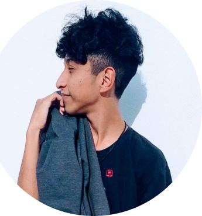
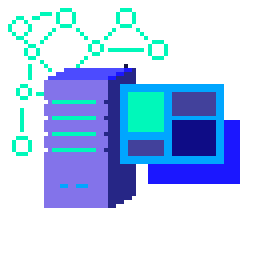
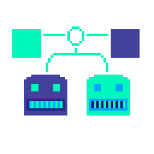
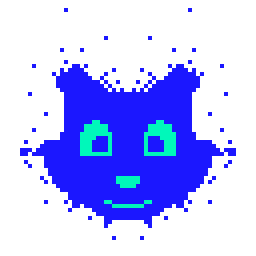

Quem sou eu

Olá meu nome é Gian Pereira Nunes, tenho 20 anos e sou atualmente, estudante de programação, atualmente migrando para ser fullstack. Venho estudando técnologia desde os meus 15 anos de idade, porém, mergulhei na programação quando consegui meu curso na Alura, a partir daí tracei meus planos para tornar Freelancer nessa área. Desde então, busquei oportunidades, até que adquiri minha primeira em uma empresa real: O Ibiuna Clara Resorts.


